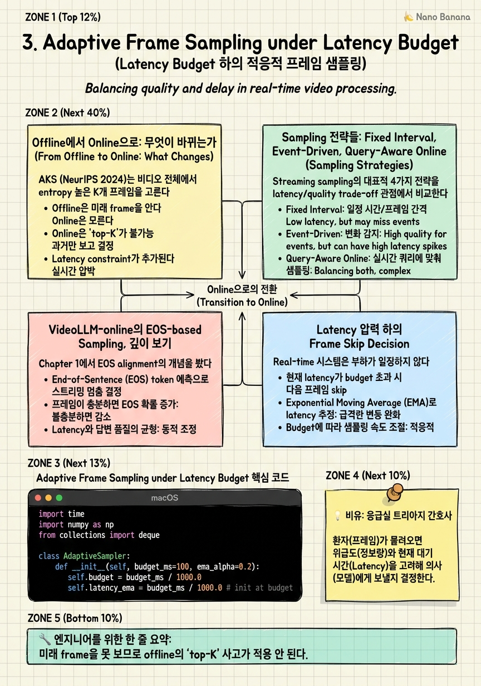

Adaptive Frame Sampling under Latency Budget

🎯 학습 목표
- Offline frame selection (AKS, Frame-Voyager)을 streaming에 그대로 못 쓰는 이유를 설명할 수 있다
- Fixed interval, event-driven, query-aware sampling 각각의 latency/quality 특성을 비교할 수 있다
- VideoLLM-online의 EOS sampling이 'budget-aware' 결정을 어떻게 모델 안에 내재화하는지 설명할 수 있다
- Latency 압력이 높을 때 frame skip을 결정하는 policy를 설계할 수 있다
- Adaptive sampling의 quality 손실을 정량적으로 평가하는 metric을 제시할 수 있다
이전 코스에서 우리는 frame sampling을 '유한한 K개를 N개 중에서 informative하게 고르는' 문제로 봤다. AKS는 key-frame을 entropy로, BOLT는 budget-aware로, Frame-Voyager는 query-aware로 골랐다. 이 모든 SOTA의 공통점: 전체 비디오가 손에 있다. K/N ratio를 임의로 정할 수 있고, 어떤 프레임이 답에 기여할지 미리 본 다음 결정한다.
Real-time에서 이 가정이 무너지면 sampling 문제가 완전히 다른 모습이 된다. 첫째, causal 제약: frame t를 처리할지 결정할 때 t+1을 못 본다. 둘째, budget 제약: 'best frame'을 고를 시간이 없다. 셋째, rate 제약: 카메라가 30 FPS인데 모델이 5 FPS 처리하면 6프레임 중 5개는 '버릴지 미룰지'를 즉시 결정해야 한다.
이 챕터에서는 이 새로운 문제를 다룬다. Offline에서 streaming으로 mental model이 어떻게 시프트하는지, VideoLLM-online의 EOS 기반 sampling이 왜 단순한 keyframe 선택이 아니라 'response generation과 sampling을 통합한' 한 단계 진화인지, 그리고 production에서 latency 압력이 높을 때 어떻게 graceful degradation할지를 본다.
Mental model: Offline = '최고의 K를 고른다'. Streaming = 'now, 이 frame을 처리할 만한가? 아니면 미루거나 버릴까?'를 매 frame마다 결정한다.
핵심 내용
Offline에서 Online으로: 무엇이 바뀌는가
AKS (NeurIPS 2024)는 비디오 전체에서 entropy 높은 K개 프레임을 고른다. 가장 informative하다고 판단되는 순간들이 답에 기여한다. 이건 batched optimization 문제다 — N개 점수를 매기고 top-K를 선택.
Streaming에서 이걸 그대로 적용하면? 각 frame이 들어올 때마다 'entropy를 계산해 buffer에 쌓고, 1초마다 top-K를 골라 process'한다는 패턴이 가능하다. 하지만 두 가지 문제가 즉시 발생한다.
문제 1: temporal locality 손실. Offline AKS는 비디오 끝까지 봐서 'a frame at minute 3 is one of the best 8'을 결정한다. Streaming에서는 '지난 1초 안에서 top-K'만 가능하다. 1초 단위 local maxima와 global maxima가 다르면 답 품질이 떨어진다. Local greedy = global suboptimal이라는 고전적 함정.
문제 2: latency vs quality 동적 trade-off. Offline에서는 K가 정해진 hyperparameter. Streaming에서는 K가 실시간 가용 budget의 함수다. CPU 부하가 높아져서 frame당 200ms 걸리면 K를 줄여야 한다. 부하가 가라앉으면 K를 늘려 quality 회복. 이건 controller 문제 — sampler 자체가 system load의 feedback을 받아야 한다.
BOLT (NeurIPS 2024)의 budget-aware sampling이 그나마 streaming friendly에 가깝다. 'budget이 K개일 때 어떤 K개가 informative한가'를 미리 학습. Streaming version: '이번 second의 budget이 K개일 때 지금까지 본 frame 중 어떤 K개를 LLM에 넣을까'를 매초 결정. 하지만 BOLT도 결국 chunk 끝까지 봐야 결정 가능하므로 약간의 lookback 지연이 필요하다.
Streaming sampler의 본질: '미래를 못 보는 한계' + '시스템 부하에 적응' + '답 품질의 graceful degradation'. 이 세 가지가 동시 성립해야 한다.
Sampling 전략들: Fixed Interval, Event-Driven, Query-Aware Online
Streaming sampling의 대표적 4가지 전략을 latency/quality trade-off 관점에서 비교한다.
Fixed Interval Sampling: 매 N frame마다 1개를 process. 가장 단순. 30 FPS → N=6이면 5 FPS 처리. 장점: 결정적, latency 예측 가능. 단점: 정보 밀도와 무관하게 균등 sampling → 중요한 순간을 놓침. Baseline으로 항상 비교 대상이 된다.
Event-Driven Sampling: 'frame difference', 'motion', 'audio onset' 같은 cheap signal로 '뭔가 일어났을 때만' process. CCTV 시나리오의 표준. 99%의 frame이 같으면 1% 만 LLM에 보냄. 장점: 평균 처리량 극적 감소. 단점: detector quality에 의존, false negative가 사건을 놓침. 시그널 detector → trigger → LLM 패턴 — detector가 latency budget의 첫 단계.
Query-Aware Online: 사용자 query가 있을 때 '이 frame이 답에 기여하는가'를 cheap classifier로 판단. Frame-Voyager의 streaming 버전에 해당. 장점: 사용자 의도 반영. 단점: query 없을 때 default 정책 필요 (event-driven으로 fallback).
EOS-Based Sampling (VideoLLM-online): 모델 자체가 '지금 process할까, 다음 frame을 기다릴까'를 next-token으로 결정. EOS-like token이 'no response yet'을 의미. 장점: sampling과 response generation이 jointly 학습됨 — 외부 sampler가 없어도 자체 budget을 인지. 단점: 학습에 narration-aligned data가 필요, response가 늦어질 위험.
Production blueprint: multi-tier sampling. (1) 모든 frame은 cheap detector (motion + audio)로 trigger 판단. (2) Trigger된 frame만 vision encoder로. (3) 일정 frame batch가 쌓이면 LLM에 sliding window context로 전달. 각 tier가 다음 tier의 latency budget을 조절한다. 'sampling은 한 곳에서 결정'이 아니라 여러 단계에 분산된다.
VideoLLM-online의 EOS-based Sampling, 깊이 보기
Chapter 1에서 EOS alignment의 개념을 봤다. 여기서는 sampling 관점에서 다시 본다.
전통적 video LLM은 'video → response' 매핑이다. 모델이 sampling 결정에 관여하지 않는다 — 외부 sampler가 골라준 frame을 받아 답한다. VideoLLM-online은 다르다. 매 frame이 들어올 때 모델은 prefix [v_1, v_2, ..., v_t]를 보고 next token을 sampling한다. Token vocabulary에 silence token (또는 EOS-like)이 있다. Silence가 sampling되면? '아직 답할 만한 게 없다' → 다음 frame을 기다린다. Word token이 sampling되면 그 시점부터 response 시작.
이게 sampling 문제로 매우 흥미로운 점: '어떤 frame을 LLM에 넣을지'와 '언제 응답할지'가 같은 메커니즘으로 결정된다. 모델 입장에서 frame은 매번 들어오지만, 'response'라는 외부 행동은 silence 토큰이 끊길 때만 발생한다. 즉 silence가 자연스러운 'frame skipping (응답 측 skipping)'이다.
학습 데이터 구조: narration-aligned video (Ego4D, narrated cooking video 같은). 시간 축에 narration이 있는 구간은 word token, 그 외는 silence token으로 라벨링. 모델은 'narration timing'을 학습한다 — '이런 visual pattern이 나오면 narration이 시작될 만하다'.
Micro-design 통찰: 왜 silence token을 LM vocabulary에 통합했는가, 별도 trigger network가 아니라. 별도 trigger를 두면 (1) 두 모듈 사이의 동기화 (frame이 들어올 때마다 trigger를 평가) 비용, (2) trigger와 response 사이의 latency, (3) backprop의 분리 (joint 학습 안 됨). LM head 안에 통합하면 모든 게 next-token prediction 하나로 끝난다.
Production에서의 한계: silence 결정이 'no response'이지 'no processing'이 아니다. 즉 vision encoder forward는 어쨌든 매 frame 돌아간다. 진정한 frame-level skip을 하려면 별도 gating이 필요 — VideoLLM-online + cheap event detector 조합이 production blueprint.
Latency 압력 하의 Frame Skip Decision
Real-time 시스템은 부하가 일정하지 않다. 어떤 순간 모델이 frame당 100ms로 처리하다가, 갑자기 GPU 다른 process가 끼어들어 200ms로 늘어나기도 한다. 이때 시스템은 'graceful degradation'을 해야 한다 — quality는 떨어지더라도 latency는 유지.
Skip policy의 구현: queue depth와 frame age를 보고 결정한다.
if age(frame) > budget * 0.8:
# 거의 stale → skip
elif queue_depth > threshold and frame_is_low_motion:
# 부하 + 정보 적음 → skip
else:
process(frame)
이런 단순한 rule이 의외로 강력하다. 'low motion frame을 skip'은 frame difference (이전 frame과의 L2 norm 등)로 cheap 판단. Information-theoretic으로는 redundant frame이라 skip해도 quality 손실이 적다.
Adaptive K: VideoLLM-online 스타일에서, response 빈도를 system load에 따라 조절. 부하가 높으면 silence를 더 길게 — 즉 'response를 덜 자주' 생성. 이건 inference-time hyperparameter (temperature, silence bias)로 control 가능. 모델 retraining 없이 budget 조절이 가능하다는 점이 production에서 중요.
Tail latency 관리: p99 latency가 budget을 초과하는 frame이 1%만 있어도 사용자 경험은 크게 나빠진다. Production에서는 'budget 초과가 예상되는 frame은 미리 skip' 패턴을 쓴다. Encoder forward 직전에 'expected latency'를 예측 (recent moving average) — budget 초과 예상 시 skip. 이건 control theory의 PID controller와 유사한 feedback loop.
Quality 측정: skip이 quality에 미치는 영향을 정량화하지 않으면 policy를 tune할 수 없다. Production metric: 'response quality (LLM-as-judge로 평가) vs skip rate'. Skip rate 0%에서의 quality를 baseline 100, 20% skip 시 95, 50% skip 시 80 같은 식. 이 curve가 system의 degradation profile이다.
Drop vs Process: 결정 모델
Drop과 process의 결정을 수학적으로 모델링하면 흥미로운 그림이 나온다. 각 frame에 대해 utility (process해서 얻는 quality 이득)와 cost (latency 소비)를 매기고, budget 제약 하에 utility maximization.
Utility 추정: cheap predictor (motion magnitude, scene change detector, query relevance score) 기반. Frame과 이전 N개 frame의 차이가 크면 utility 높음. Query가 'is there a person'이면 person detector score가 utility의 proxy.
Cost 추정: 모델의 recent latency moving average. 동적으로 변함.
결정 rule: process if utility / cost > threshold. Threshold는 system load에 따라 동적 조정 — 부하 높으면 threshold 높임 (process를 덜 함), 부하 낮으면 낮춤.
이 모델의 학문적 배경은 online resource allocation 문제. Streaming setting에서 미래의 utility/cost를 모르므로 한 가지 simple policy로 다 풀 수 없고, threshold를 system load에 따라 adapt하는 게 실용적 답.
Flash-VStream (2024)이 비슷한 아이디어를 memory tier 사이에서 구현했다. STAR (Spatial-Temporal-Abstract-Retrieved) hierarchy에서 frame을 어느 tier로 보낼지를 utility 기반으로 결정. 이건 다음 챕터의 주제이지만, sampling과 memory 관리가 streaming에서 deeply intertwined되어 있음을 시사한다.
실전 시그널: 후보자가 'skip이 quality에 얼마나 영향을 주는지 어떻게 측정할 것인가?'에 대해 LLM-as-judge나 downstream task accuracy 같은 구체적 metric을 제시할 수 있는가. '대충 봐서 괜찮으면 OK' 식의 답은 production에서 작동하지 않는다.
💡 비유로 이해하기
Offline frame sampling은 의대 교수가 '이 100명 환자 차트 중 가장 흥미로운 사례 10개를 골라달라'는 과제와 같다. 모든 차트를 살펴보고, 차분히 비교하고, 최고의 10개를 선정한다. 시간이 얼마나 걸리든 문제 없다.
Streaming sampling은 응급실 트리아지 간호사의 일이다. 환자가 끊임없이 들어온다. 한 명을 자세히 보면 다음 환자가 기다리고, 그 사이 위급한 환자가 나타날 수 있다. 간호사는 매 환자에 대해 즉시 결정한다 — '이 환자는 지금 의사에게 (process), 이 환자는 대기실에서 잠시 (queue), 이 환자는 가벼우니 나중에 (skip)'. 그리고 결정적으로, 응급실에 한 번에 들어갈 수 있는 의사의 수가 정해져 있다 (budget). 의사가 모두 바쁘면 트리아지 기준이 더 까다로워진다 (load-adaptive threshold).
VideoLLM-online의 EOS sampling은 '환자가 들어올 때마다 의사가 직접 보고 한 줄 평을 적되, 별 거 아니면 그냥 silence를 적는' 시스템과 같다. 트리아지와 진단이 한 사람에게 통합되어 있다. 효율적이지만 의사가 늘 거기 있어야 한다.
이 비유에서 핵심: '모든 환자를 다 본다'는 강박은 시스템을 무너뜨린다. Real-time sampling도 마찬가지다. Quality는 '몇 명을 보았는가'가 아니라 '본 환자에 대해 얼마나 빨리 정확한 결정을 했는가'로 측정된다.
💻 코드 예시
Adaptive sampling controller — system load와 frame utility를 동시 고려해 process/skip을 결정한다. Production code의 단순화 버전.
import time
import numpy as np
from collections import deque
class AdaptiveSampler:
def __init__(self, budget_ms=100, ema_alpha=0.2):
self.budget = budget_ms / 1000.0
self.latency_ema = budget_ms / 1000.0 # init at budget
self.alpha = ema_alpha
self.prev_frame = None
self.threshold = 1.0 # adapts to load
self.skip_count = 0
self.process_count = 0
def utility(self, frame):
# cheap motion-based utility
if self.prev_frame is None:
return 1.0
diff = np.mean(np.abs(
frame.astype(np.float32) - self.prev_frame.astype(np.float32)
)) / 255.0
return float(diff * 10) # scaled motion magnitude
def should_process(self, frame, age):
# stale frame: always skip
if age > self.budget:
self.skip_count += 1
return False
# adaptive threshold based on recent load
load_factor = self.latency_ema / self.budget
threshold = self.threshold * (1.0 + load_factor)
u = self.utility(frame)
if u < threshold:
self.skip_count += 1
return False
self.prev_frame = frame
return True
def report_latency(self, latency_s):
self.process_count += 1
self.latency_ema = (1 - self.alpha) * self.latency_ema \
+ self.alpha * latency_sCore idea는 threshold가 load_factor에 따라 동적으로 움직인다는 점이다. latency_ema가 budget의 80%면 load_factor 0.8, threshold가 1.8배로 올라간다 — 더 informative한 frame만 process. 부하가 가라앉으면 threshold가 낮아져 더 많은 frame을 process. utility는 cheap motion-based metric — production에서는 학습된 score head를 쓸 수 있다. report_latency로 EMA를 업데이트하는 feedback loop가 controller의 핵심. 시니어가 즉시 지적할 부분: utility의 1차원 metric만으로는 부족하다 — query-aware utility가 추가되어야 conversational 시나리오에 통한다.
🏭 현업에서의 평가
✅ 시니어가 보는 것
- Offline sampler를 streaming에 그대로 쓸 수 없는 이유 (causal)를 즉시 설명
- Load-adaptive threshold 같은 controller 사고를 자연스럽게 함
- Frame skip을 'quality degradation'이 아니라 'graceful degradation'으로 받아들임
- VideoLLM-online의 EOS 통합이 sampling 문제의 답이 된다는 통찰
- Skip rate vs quality curve를 SLA의 일부로 다룸
⚠️ 레드 플래그
- Offline sampler (AKS, BOLT)를 그대로 streaming에 쓰겠다는 답변
- Fixed K (frame 수)를 모든 부하 상황에서 동일하게 유지
- Skip을 'frame loss'로 인식 — 모든 frame을 처리해야 한다고 고집
- Load feedback loop 없이 static policy만 제시
🎤 예상 인터뷰 질문
- VideoLLM-online의 silence token이 sampling 문제를 어떻게 해결하는지 설명하라. 별도 sampler를 두는 것과 비교해 장단점은?
- GPU 부하가 갑자기 2배로 증가했을 때 frame skip rate를 어떻게 동적으로 조정할 것인가? Quality와의 trade-off를 정량화하라.
- Event-driven sampling과 query-aware sampling을 동시에 사용하는 hybrid system을 설계하라. Detector가 false negative를 낼 때 어떻게 fallback하는가?
✨ 핵심 요약
Causal 제약이 sampling 문제를 바꾼다
미래 frame을 못 보므로 offline의 'top-K' 사고가 적용 안 된다.
K는 system load의 함수
Static K가 아니라 budget이 허락하는 K. 부하가 높으면 K 줄여 quality 희생.
EOS Sampling = response + sampling 통합
VideoLLM-online의 silence token은 '언제 응답할지'와 '어떤 frame이 중요한지'를 하나의 메커니즘으로 결정.
Multi-tier sampling이 production 표준
Cheap detector → encoder → LLM 순으로 점점 비싼 단계, 각 단계에서 filtering.
Skip은 graceful degradation의 도구
Quality와 latency trade-off의 dial. SLA metric으로 export.
Load-adaptive threshold가 핵심
Controller 사고 — recent latency EMA를 보고 threshold를 동적 조정.
Stale frame은 항상 drop
Budget을 이미 넘긴 frame은 process해도 의미 없다 — 가장 단순한 win.
Sampling은 한 곳에서 결정하지 않는다
Pipeline의 여러 단계에 분산 — capture, detector, encoder, LLM 각각이 자기 단계의 sampling 결정을 함.